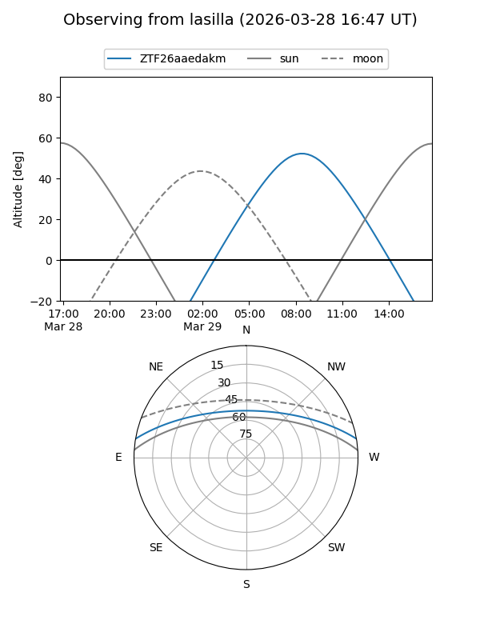
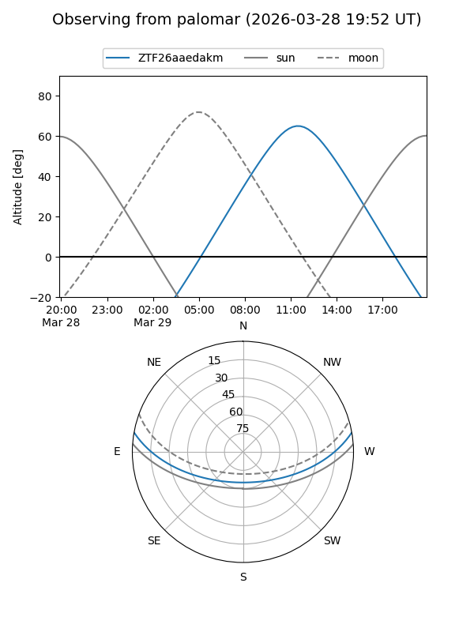

ZTF26aaedakm
Target ZTF26aaedakm at 2026-03-29 14:28
Aliases and brokers:
FINK: link
Lasair: link
ALeRCE: link
alt names
ZTF26aaedakm (ztf,fink_ztf)
Coordinates:
equatorial (ra, dec) = 241.8153,+8.50617
equatorial (HMS+DMS) = 16:07:15.68,+08:30:22.20
galactic (l, b) = (20.4966,+40.19724)
Flags:
Photometry:
last ztfg=16.45
1 ztfg detections
Lightcurve
Visibility


Additional plots